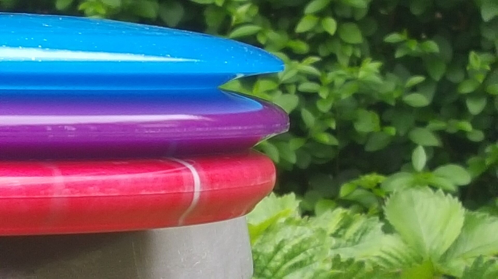

Beginnings
Modern disc golf started in the early 1960s, but there is debate over who came up with the idea first. The consensus is that multiple groups of people played independently throughout the 1960s. Students at Rice University in Houston, Texas, for example, held tournaments with trees as targets as early as 1964, and in the early 1960s, players in Pendleton King Park in Augusta, Georgia, would toss Frisbees into 50-gallon barrel trash cans designated as targets. In 1968 Frisbee Golf was also played in Alameda Park in Santa Barbara, California, by teenagers in the Anacapa and Sola street areas. Gazebos, water fountains, lamp posts, and trees were all part of the course. This took place for several years and an Alameda Park collectors edition disc still exists, though rare, as few were made. Clifford Towne from this group went on to hold a National Time Aloft record.
1970s
Ed Headrick, also known as "Steady" Ed Headrick, (June 28, 1924 – August 12, 2002) was an American toy inventor. He is most well known as the father of both the modern-day Frisbee and of the sport and game of disc golf. In 1975, Headrick's tenure at Wham-O where he helped redesign the flying disc known as the frisbee ended, and ties between Headrick and Wham-O eventually split. Headrick left the company to start out on his own to focus all his efforts on his new interest, which he coined and trademarked "Disc Golf" In 1976, "Steady" Ed Headrick and his son Ken Headrick started the first disc golf company, the Disc Golf Association (DGA).[6] The purpose of DGA was to manufacture discs and baskets and to formalize the sport. The first disc golf target was Ed's pole hole design which consisted of a pole sticking out of the ground.
Gameplay
The sport of disc golf is set up similar to a game of golf. A "round" is played on a disc golf course consisting of a number of "holes", usually 9 or 18.[16] Each hole includes a tee position for starting play and a disc golf target some distance away, often with obstacles such as trees, hills or bodies of water in between.[17] Players begin by throwing a disc from the tee, without crossing over the front of the tee prior to releasing the disc when throwing. This could lead to a fault similar to a bowling foot fault in cricket. Players then navigate the hole by picking up the disc where it comes to rest and throwing again until they reach the target. The object of the game is to get through the course with the lowest number of total throws.[18] Play is usually in groups of five or fewer, with each player taking turn at the tee box, then progressing with the player furthest from the hole throwing first, while the other players stand aside. Each course is unique, and so requires a different combination of throws to complete, with the best players aiming to shape the flight of the disc to account for distance, terrain, obstacles and weather. In order to facilitate making different shots, players carry a variety of discs with different flight characteristics, choosing an appropriate disc for each throw. Some players also carry a mini marker disc, used to accurately mark the throwing position before each throw. Use of mini marker discs is particularly prevalent in formal competitive play. Many courses include out-of-bounds areas, commonly called "OB zones" or just "OB". If the disc lands in these areas, the player is usually required to add a penalty throw onto their score and continue play from near where the disc entered the out-of-bounds zone. Some courses include out-of-bounds areas with special rules requiring the player to resume play from a specified area called a drop zone or requiring the player to restart the hole from the tee. Some courses also include Mandatories (also called "Mandos") which require the path of the disc to be above, below or to one side of a specific line indicated by a sign. By tradition, players throw from the tee box in the order of their score on the previous hole, with the lowest scorer throwing first. Most players also follow a loose code of courtesy while playing, which includes norms such as standing out of the sight line of the throwing player and avoiding making distracting noises. Because a thrown disc could injure someone, the Professional Disc Golf Association recommends that players "Never throw into a blind area or when spectators, pedestrians or facility users are within range."[19] Formal competitive play is governed by the PDGA Official Rules of Disc Golf and the PDGA Competition Manual for Disc Golf events.
Disc Types
Disc golf discs are smaller than Ultimate flying discs or general-purpose recreational frisbees. They typically measure 21–22 cm (8.3–8.7 in) in diameter and weigh 130–180 g (4.6–6.3 oz). All PDGA-approved discs measure 21–30 cm (8.3–11.8 in) in diameter and weigh no more than 200 g (7.1 oz). Discs used for disc golf are designed and shaped for control, speed, and accuracy, while general-purpose flying discs, such as those used for playing guts or ultimate, have a more traditional shape, similar to a catch disc. There is a wide variety of discs used in disc golf and they are generally divided into three categories: drivers, mid-range discs, and putters.
-
Driver
Drivers are recognized by their sharp, beveled edge and have most of their mass concentrated on the outer rim of the disc rather than distributed equally throughout. They are optimized for aerodynamics and designed to travel maximum distances at high speeds. They are typically thrown by experienced players during tee-off and other long distance fairway throws. [20] Some disc brands further sub-divide their drivers into different categories. For example, Innova has Distance Drivers and Fairway Drivers, with a fairway driver being somewhere between a distance driver and a mid-range disc. Discraft has three categories of drivers: Long Drivers, Extra Long Drivers, and Maximum Distance Drivers. Another type of driver, used less frequently, is a roller. As the name indicates, it has an edge designed to roll rather than fly. (Although any disc can be used for a roller, some behave quite differently than others). The world record distance for a disc golf throw is held by David Wiggins Jr., with a distance of 1,108.92 ft (338.00 m) on March 28, 2016.[21] He broke the previous record of 863.5 ft (263.2 m), thrown by Simon Lizotte on October 25, 2014.[22]
-
Mid-range
Mid-range discs feature a dull, beveled edge and a moderate rim width. They offer more control than drivers, but they have a smaller range. Mid-range discs are typically used as approach discs. Beginner players will often use mid-ranges instead of drivers at tee-off, as they require less strength and technique to fly straight than higher speed drivers.
-
Putter
Putters are designed to fly straight, predictably, and very slowly compared to mid-range discs and drivers. They are typically used for tight, controlled shots that are close to the basket, although some players use them for short drives where trees or other obstacles come into play. Additionally, higher speed discs will not fly properly without a fast enough release snap, so a putter or mid-range with lower snap requirements is more forgiving and will behave in a more regular way. Professional players often carry multiple putters with varying flight characteristics.